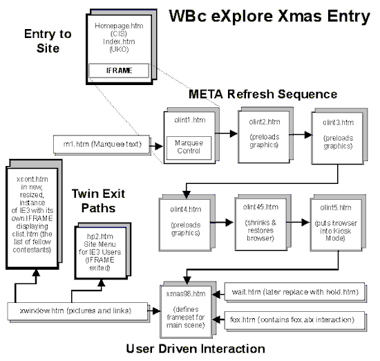
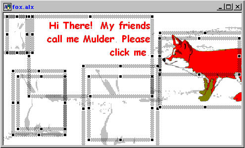

|
| ||
|
| ||
John Nicholson
Director, WinBridge Consultants Ltd.
January 23, 1997
Contents
For Internet Explorer 3.0 Eyes Only
Filtering Technique
<IFRAME>, <META> Refresh, and the Alien Greetings Slide Show
Browser Manipulation
The User Interaction Section
Initial Design
Revised Design
Fox Mulder and the Bugged Bunny
Appendix: Inside the ALX
About the author
About the contest
When I started the eXplore Xmas contest in late November 1996, I didn't anticipate how much innovation and effort would be invested in it by so many of my fellow IE-HTML mailing-list members. After all, this was -- at least initially -- a contest without any prize other than peer recognition (there hadn't been time to arrange commercial sponsorship). During the contest's short run, however, prizes were spontaneously offered by WINNOV, AmericInn, and PC-Plus magazine; and representatives of the first two sponsors, Robert Scoble and Kevin Simmons, entered the competition. How's that for seasonal spirit?
The brief for eXplore Xmas was intentionally simple and very open. The goal was to produce a Web "page" that reflected an aspect of the holiday season from the designer's point of view, used at least one Internet Explorer 3.0-only feature, and loaded swiftly into a visitor's browser. "Page" is in quotation marks because, as you'll see in the case of my own design, Internet Explorer 3.0's sophisticated feature-set enables a designer to leave far behind the kind of static text and pictures we are accustomed to on the Internet.
Okay, how did we build the Web page and why is it visible only to Internet Explorer 3.0 users? The second question's much easier to answer than the first. Because the entry employs several Internet Explorer 3.0-only technologies, it was important to stop other browsers from accessing it, which would generate unpredictable results. We could have employed a page-redirection script to detect the user's browser type and version and shunted them off to a specific version of the site's opening screen. However, we're not fans of such methods, which can effectively disable the browser's back button and place the viewer in a "loop-the-loop" situation. We prefer to use a strategy that filters the right material to the surfer's browser. We've used this strategy to "catch" Internet Explorer 3.0 users ever since the first Internet Explorer 3.0 beta was released (and have enthusiastically recommended it to other designers). This section describes how the technique works and how we applied it to achieve the site's effects.
The key element of this filtering technique is a frame-associated function unique to Internet Explorer 3.0. All frames-capable browsers recognise the standard HTML frameset definition and associated <NOFRAMES> tag sets, although specifics of how they are interpreted can vary. In addition to the HTML standard, Internet Explorer 3.0 recognises a different frame type, the floating frame, generated by use of the <IFRAME> tag.
Because they are not understood by other browsers such as Netscape, <IFRAME> definitions are ignored unless they are parsed by an Internet Explorer 3.0-equipped visitor. This enables a designer to use Internet Explorer 3.0-specific material that is accessed only through an <IFRAME>, which appears to be part of a traditionally formatted page to users of other browsers.
By setting dimensions of the <IFRAME> to fill the Internet Explorer 3.0 user's screen (and placing <NOFRAMES> tags around the code you don't need Internet Explorer 3.0 users to see on the "parent" page), you can transparently filter the user through the opening screen (they are, in fact, still inside it at this point) and present them with the Internet Explorer 3.0-specific material. Note that only Internet Explorer 3.0 recognises the <NOFRAMES> tags on the opening screen by skipping the code between them. Internet Explorer 3.0 is unique in always recognising <NOFRAMES>; other frames-capable browsers ignore the tags if they can't see a recognisable frameset on the same page. Because other browsers don't recognise <IFRAME> as a valid frame definition, they ignore the <NOFRAMES> tags and render the code between them on-screen -- which is exactly what we want them to do! We use this technique in some of the standard sections of our sites. It enables us to construct single pages that appear with stand-alone internal navigation links in less capable browsers but are hidden when viewed via an Internet Explorer 3.0 frameset; thus, we can provide Internet Explorer 3.0 users enhanced functionality without maintaining different versions of the same information.
To get down to practical matters, here's a sample of the actual code involved. Index.htm, which is accessed by default when you enter our European UKO site (for the contest this was mirrored on homepage.htm at our U.S. CIS site because several U.S. visitors seemed to suffer from low-speed trans-Atlantic links), includes the following <IFRAME> definition:
<IFRAME FRAMEBORDER=0 SCROLLING=NO WIDTH="100%" Height="800" src="olint1.htm"></iframe>
Usually, the SRC attribute in this definition points to hp2.htm, our standard welcome screen for Internet Explorer 3.0 users, displaying it in an "invisible window" as soon as they access the site. For the contest, the SRC attribute simply pointed to the first of the Alien Greetings intro screens: olint1.htm. No other changes to the standard index page were required, in strict terms, for the entry to operate.
However, we did end up installing a fail-safe window_OnUnload subroutine on this page. Why? Because in normal operation, the user is offered the opportunity to run most of our site in kiosk (full-screen) mode. To prevent people from leaving the site in kiosk mode, index.htm has a small routine that defeats kiosk mode when index.htm is loaded. However, the new kiosk mode Xmas scene (which loads itself inside index.htm) could quite possibly be visited via a list of contestants on another site that is run from a separate instance of Internet Explorer 3.0. If this were the case, the visitor might choose to switch to another entrant on the list without first using a link in our scene that defeats kiosk mode. We therefore added a defeat function to index.htm at Unload to ensure that surfing visitors would leave with their usual set of Internet Explorer controls available.
Note how the other <IFRAME> attributes are set; the settings are vital to the illusion that you are not actually looking at a framed page. For example, if SCROLLING were left on within the <IFRAME> element, the user would see two (very messy) scrollbars at the right of their browser window; yet we need to maintain scrollability for users with lower-resolution screens. To achieve this, it is not sufficient to set the <IFRAMES> HEIGHT to 100% (as we have its WIDTH) because that would freeze the window at the current screen depth, which would be insufficient to display all of its final content to most users. Instead, the <IFRAME> is set to a fixed, but large, height in pixels. This setting makes the object too deep for most users' screens, which in turn causes the browser to activate its built-in vertical scrollbar.
To the user, all looks as if they are accessing a traditionally formatted page. No functionality is lost and, because physical redirection has been avoided, all browser navigation controls continue to work as expected. As far as Internet Explorer 3.0 is concerned, in spite of what happens within the <IFRAME>, you have actually never left index.htm. One last point needs to be taken care of for all this to be totally transparent to the user. The page that contains the <IFRAME> definition, in this case index.htm, must have the LEFTMARGIN and TOPMARGIN attributes set to zero in its <BODY> tag (which itself must appear outside of any <NOFRAMES> tag sets that you employ). If margins are left to the browser the illusion is spoiled, because the frame is offset at the top and left margins of the main Internet Explorer window.
There will of course come a point when you want to break out of the confines of your invisible frame (after it's guided Internet Explorer 3.0 users to a part of your site or -- as is normally the case with our sites -- to a menu that includes items not relevant to users of other browsers). This can be accomplished with a link that includes the TARGET="_top" attribute. In the case of our contest entry, we don't need to provide this until the final screen.
With our filtering technique, the Internet Explorer 3.0 user is presented with a "Season's Greetings, Earthling" screen (rendered in the LCD font if you have it on your system, Arial if you don't), with some vertically scrolling text (accomplished with a simple ActiveX™ Marquee control, which is installed with Internet Explorer 3.0 and activates very quickly). The reason for including this and the immediately following screens, which we call the Alien Greetings Slide Show, is twofold. First, we want to surprise visitors with a little Internet Explorer manipulation and gently transition them into kiosk mode for the main Xmas screen. Second, we want to provide a distraction so that parts of the main Xmas screen can be downloaded to the user's cache before they are needed. The final screen is complex and we want it to draw on-screen as quickly as possible from the user's point of view.
To achieve this instantly loaded images effect (which isn't perfect, but better than watching a blank screen while a large download takes place), all the Alien Greetings Slide Show pages call for one or more graphic files. You don't see the graphics during the slide show because they're loaded way down in the screen and set to 1x1 pixel height and depth, but they're in your cache and ready to step onstage as required. We could have employed the Preloader ActiveX control for this task but, as only images were involved, decided to go for this simple technique.
The page flipping in the slide-show sequence is achieved by setting the <META> tag's HTTP_EQUIV attribute to "Refresh". For example, olint1.htm automatically replaces itself with olint2.htm using the following code within its HEAD section:
<META HTTP-EQUIV="Refresh" CONTENT="6; URL=olint2.htm">
Note that the six-second delay specified by CONTENT above is in addition to the time it takes to load olint1.htm itself, which includes running the piece of freeware JavaScript™ that gives it a fade-in effect and loading two small graphics for later use. The Refresh counter starts after your code is interpreted by the browser.
The next three screens in the slide-show sequence are very straightforward. Tables provide the vertical and horizontal effects through the BGCOLOR property of their cells (note that the horizontal screen is more or less effective depending on the screen resolution used by the viewer, as we couldn't find a technique [yet!] that would guarantee centralised positioning in the vertical axis). We did consider using frames instead of tables to achieve the effects, but these proved slower to draw on-screen and didn't solve the problem of vertical alignment because our process takes place in an invisible (but still real) 800-pixel-deep window. In this situation, setting up a three-row frameset to vertically centralise the message would actually push the middle row containing it off the bottom of most user's screens.
By the way, you'll probably notice that the background music continues while the screens change. This occurs because we placed the code for it on index.htm, outside of the <NOFRAMES> tags. Because index.htm remains loaded (but invisible) throughout the sequence, the music is not interrupted.
To sum up, the actual slide-show sequence takes place within an <IFRAME> hosted by index.htm, the alternative contents of which have been rendered invisible to Internet Explorer 3.0 users with <NOFRAMES> tags. Figure 1 shows how the entire sequence (including the main Xmas screen that ends it) is accomplished:

Figure 1. The sequence flow during the contest
The tricky bit, though it's actually quite simple to accomplish, is the browser manipulation carried out by olint45.htm. We haven't seen this done by any other Web site (though they may have restrained themselves out of good taste), but it was too tempting to leave out of the slide show sequence. So how is your browser made to shrink? With this code:
<SCRIPT LANGUAGE="vbscript"> <!-- dim pe dim ew dim eh set pe=parent.Explorer ew=pe.Width eh=pe.Height pe.Width=ew*0.5 pe.Height=eh*0.5 --> </SCRIPT>
This code activates as olint45.htm loads into the browser window. The current browser settings for HEIGHT and WIDTH are stored in eh and ew respectively; pe is set to be synonymous with the browser itself. Note the use of the parent prefix to identify the main Internet Explorer application -- this is necessary because the code is actually running inside a framed document.
If we didn't employ the parent keyword, the frame (which is in a sense a virtual instance of Explorer) would shrink instead of the main application window. The settings are stored as declared variables because they are needed by an equally simple subroutine that activates when the document unloads and restores Internet Explorer to its former width and height:
<SCRIPT LANGUAGE="vbscript"> <!-- Sub window_onUnload() pe.Width=ew*2 pe.Height=eh*2 end sub --> </SCRIPT>
We're still working on all the implications of this technique; however, it does appear to work correctly in the context of the eXplore Xmas entry.
The final page of the Alien Greetings sequence, olint5.htm, uses a tried-and-true technique to throw the main Explorer window into kiosk mode. Again, parent is required due to the page being framed:
<SCRIPT LANGUAGE="vbscript"> <!-- Sub window_onLoad() dim fs set fs=parent.Explorer if fs.fullscreen=false then fs.fullscreen=true end if end sub --> </SCRIPT>
Although things are happening (hopefully) too quickly for the user to spot, the browser is actually restored first to its default size (that is, as last adjusted by the user) using the code from olint45. If this step wasn't taken, the user would be returned to a tiny browser window once they left kiosk mode.
All of the above serves as an introduction to the final, and main, Xmas screen. For this we wanted to do something else we hadn't seen before: present the viewer with a BIG, screen-filling scene that was seamless, complex, interactive, and seasonal -- but didn't take an age to load. We also wanted to employ Internet Explorer 3.0-exclusive features, to comply with the contest rules (even though the intro, which was actually added on as an afterthought to the main scene, had already done that), and because I was certain that some of the new Internet Explorer HTML tags held untapped creative possibilities.
We started with a rough design of what we wished to achieve. I wanted a window (pun intended) as a central part of the design, but a static graphic didn't fit the bill. This window had to have twinkling stars and other active objects associated with it. In the end the answer was simple, thanks to Internet Explorer's HTML extensions. If you study the source code you'll see that the shop window is actually a <TABLE>, that its cells form the individual panes; and the graphic of the cards, holly, and cat are set as its BACKGROUND attribute (just one of the things on this page that are possible only with Internet Explorer 3.0). Loaded during the slide-show introduction, this relatively large image (like several others in the scene) appears very quickly because it is already in the user's cache. The animated GIFs and other graphic elements that appear inside the actual cells of the table, overlaying the background graphic, use the same technique.
Next, I wanted a wall to set the window in. This is the most straightforward piece of the design; it is simply a small repeating graphic assigned to the page's <BODY> tag. In the original concept, the final piece of the scene was the Continue Now sign with our names written in the snow. This is a simple one-row, three-cell table containing three GIFs with transparency set so the wall shows through to join seamlessly with the snow. Whereas the width of the "window" table (and the small one above it that holds a standard Internet Explorer HTML <MARQUEE> tag for the scrolling instructions) are fixed at a value that allows users with relatively low-resolution displays to see them without horizontal scrolling, I wanted the snow below the window to stretch right across the user's screen. To ensure this, the table's WIDTH attribute is set to 100%, as is the WIDTH attribute for the pictures of snow in its left- and right-hand cells. Set up this way, the images automatically expand to fill the width of the user's display -- whatever the resolution. Having designed systems for on-screen access for many years, I always try to make my designs resolution-independent.
The next task was to construct a graphic link in one of the window panes to call a new instance of Internet Explorer 3.0 in which to host the World Tour list of other entrants, and to make it (and the Continue Now sign) automatically pull the user's browser out of kiosk mode and restore access to their controls. The World Tour graphic uses the OnClick method to call a simple subroutine that does the work.
Code for the World Tour sign:
<script language="vbscript"> <!-- Sub NoKioskNav() dim es set es=parent.parent.Explorer (note: double "parent" as page is in a nested frame; see below and figure 1) es.fullscreen=false window.open "xcont.htm", "exmas", "toolbar=no, location=no, directories=no, status=no, menubar=no, scrollbars=yes, resizeable=yes, width=400, height=400" (note: this statement must all appear on one line) End Sub --> </script>
Note: The extensions to the window.open command that affect the appearance of the window were dropped when it was discovered that closing this instance of Internet Explorer 3.0 last could result in the user's toolbar and status bar being hidden the next time they started Internet Explorer. Until an effective solution is found, we do not recommend using this method. The code to resize the new browser instance was moved to the OnLoad procedure of xcont.htm; the effect is less smooth but does not upset the visitor's browser settings.
In contrast, Continue Now requires no subroutine of its own because it calls hp2.htm (using TARGET="_top"), our conventional Internet Explorer 3.0 user's menu screen, which contains its own "kiosk killer" code on Onload.
This was the design until I decided to introduce "Fox Mulder." Fox Mulder is, of course, a self-contained ALX file. I didn't want the loading of the key scene to be held up by the presence of a relatively large ALX (apart from anything else, this could prevent the music from triggering more or less on cue). Also, because the site would be accessible to anyone visiting the site using Internet Explorer 3.0, I had no guarantee that they would all have the ActiveX Control Pad set of ActiveX controls installed (I restricted myself to these ActiveX controls as they had been widely distributed). Although Fox has his codebase set, the download time in such a situation is no trivial matter and I felt users had to have an easy way out. At this point we decided to split the Xmas scene into two separate pages. What you see live is a borderless frameset still nested within the original <IFRAME> containing the window scene in its upper half (xwindow.htm) and Fox and his associated graphics in the lower half (fox.htm). With this arrangement, it is less likely that the top scene will grind to a halt if the user lacks the basic ActiveX controls required in the bottom scene.
To maintain the ideal of resolution independence, the ALX is set within the right-hand cell of a one-row table. This cell has its width fixed to that of the ALX, whereas the left-hand cell and the graphic inside it are set to expand or contract to fill the remaining screen width. Thus the ALX is integrated into the overall scene. As a courtesy to any visitors not having the required ActiveX controls, an explanatory message is in the cell beneath the ALX object definition. If the controls are present, the ALX pushes this out of sight, beyond the bottom boundary of the 800-pixel-deep <IFRAME>. If the controls are not present, the visitor is informed that the download is taking place and told how to proceed if they wish to.
The interaction itself is in the form of a simple conversation and a chase-the-rabbit sequence. The sequence relies heavily on MouseEnter and MouseExit events (as shown in the appended code) and therefore requires that hot spot controls be placed over the various picture controls that make up the composition (see Figure 2 for details of the controls involved). This in turn means that the easiest way to accomplish the task using current technology is via an ALX, as this allows the precise overlaying of the different controls that are necessary.
Mulder will react as intended if "stroked" with the mouse. However, the code also allows for the fact that users may ignore his request and continue to click him instead. If this is the case the sequence will still run successfully, but a few of his responses will not be displayed. This is by design, because we want to give users the opportunity to discover new aspects of the interaction each time they try it while keeping things simple and intuitive. Anything that seemed to cause problems during the (very short) development period was removed before publication -- problems principally arose when we tried to issue multiple actions or methods to a control at the same time; removal of these multiple actions and methods resulted in a simpler (but very stable) interaction.
Oh, and one other thing -- that "bark." This is me I'm afraid; the real Fox Mulder having failed to cooperate at this point (he's normally found beneath my garden shed during winter). The bark is accomplished by causing a tiny document, with the bark set as its BGSOUND attribute, to load into a 1-pixel-high frame at the top of the screen. There's got to be a better way to do this, though it demonstrates how you can control the contents of a frameset from within an ALX. The actual call involved in this case is:
parent.frames(0).location.href = "hold.htm"
It is issued when the mouse moves over Mulder. You don't hear a bark when the frameset first loads because frame(0) initially holds an empty HTML document: wait.htm.
When the user decides to leave the page through the Continue Now sign, a simple link including the TARGET="_top" attribute loads our normal hp2.htm menu screen for Internet Explorer 3.0 users. In doing so it removes the frameset, the <IFRAME> containing it, and index.htm from the user's browser.
The ALX interaction was constructed in ActiveX Control Pad and extensively tweaked by hand. As the code is "hidden" inside an ALX file, I've appended it here with annotations:

Figure 2. The ALX (note that image controls and hot spots associated with the rabbit are hidden at initialization)
<SCRIPT LANGUAGE="VBScript">
<!--
<!-- DIM variables and set initial condition of the three Image controls that will hold
the rabbit and their associated hot spots to disabled and invisible -->
dim StartNow
StartNow=false
dim mess
mess=0
dim foxoff
foxoff="NOW YOU'VE LET HIM ESCAPE! Then again, perhaps he was a bugged bunny. Yuk.. Yuk..."
ImageRS.Enabled=false
ImageRM.Enabled=false
ImageRL.Enabled=false
HotSpotrsmall.Enabled=false
HotSpotRmid.Enabled=false
HotSpotRlarge.Enabled=false
<!-- Set up actions for the Fox related hot spot, check to see if user has completed
"conversation" - if so reset value of "mess" to zero and trigger MouseEnter event,
restarting the conversation -->
Sub HotSpot1_Click()
if Label1.Caption = foxoff then
mess=0
HotSpot1_MouseEnter
else
StartNow = true
HotSpot1_MouseEnter
end if
end sub
<!-- If StartNow was set to true above then the user is currently somewhere
within the conversation (but not at its end), increment "mess" to display the
next phrase. Whatever the situation, cause the document in Frame(0) to be reloaded -
providing the "bark" sound effect via its BGSOUND attribute. -->
Sub HotSpot1_MouseEnter()
parent.frames(0).location.href = "hold.htm"
If StartNow=true then
mess=mess+1
if mess < 5 then
Label1.ForeColor = &H00FF0080
Select Case(mess)
Case 1
Label1.Caption = "That's the spot. Any chance of
a sausage? You can stroke me if you like."
Case 2
Label1.Caption = "How's about a turkey wing?"
Case 3
Label1.Caption = "Mince pie?"
<!-- If "mess" has a current value of 4 then it's time for the rabbit to appear,
so the smallest image is enabled and made visible -->
Case 4
Label1.Caption = "Suppose I'll have to catch that
rabbit then..."
ImageRS.Enabled=true
ImageRS.Visible=true
<!-- The IF...ELSE structure causes the rabbit to "turn its head" if the user re-enters the hot spot -->
if ImageRS.PicturePath = "rablr.gif" then
ImageRS.PicturePath = "rabll.gif"
else
ImageRS.PicturePath = "rablr.gif"
end if
<!-- Enable the small rabbit's hotspot -->
HotSpotrsmall.Enabled=true
end select
end if
<!-- "Head turners" for medium and large rabbit pictures as they become visible -->
if ImageRM.Visible=true then
ImageRM.PicturePath = "rablr.gif"
end if
if ImageRL.Visible=true then
ImageRL.PicturePath = "rabll.gif"
end if
end if
end sub
<!-- Issue appropriate "response" from the fox if the user moves their cursor away
during the "conversation" -->
Sub HotSpot1_MouseExit()
if StartNow=true then
Label1.ForeColor = &H00400040
Select Case(mess)
Case 1
Label1.Caption = "Thought not!"
Case 2
Label1.Caption = "I can see that won't fly!!"
Case 3
Label1.Caption = "well, it was worth a try..."
Case 4
Label1.Caption = "Click on it for me would you?
I'm no good with a mouse; tend to eat 'em."
end select
<!-- Fail safe to allow for users who click the fox rather than "stroking" it -->
If Label1.Caption = "Suppose I'll have to catch that rabbit
then.." Then
Label1.Caption = "Click on it for me would you?
I'm no good with a mouse; tend to eat 'em."
end if
if ImageRS.Visible=true then
ImageRS.PicturePath = "rabll.gif"
end if
if ImageRM.Visible=true then
ImageRM.PicturePath = "rabll.gif"
end if
if ImageRL.Visible=true then
ImageRL.PicturePath = "rablr.gif"
end if
end if
end sub
<!-- Set up click actions of the three "rabbit" hot spots so that the associated
image control disappears and the next in line takes its place until all have been
clicked. -->
Sub HotSpotrsmall_Click()
ImageRM.Enabled=true
ImageRM.Visible = true
ImageRS.Visible = False
ImageRS.Enabled=false
HotSpotRmid.Enabled=true
HotSpotrsmall.Enabled=false
Label1.Caption = "Quick! He's getting away!"
end sub
Sub HotSpotRmid_Click()
ImageRL.Enabled=true
ImageRL.Visible = True
ImageRM.Visible = False
ImageRM.Enabled=false
HotSpotRlarge.Enabled=true
HotSpotRmid.Enabled=false
Label1.Caption = "If you want something doing..."
end sub
Sub HotSpotRlarge_Click()
ImageRL.Visible = False
ImageRL.Enabled=false
Label1.ForeColor = &H000000FF
Label1.Caption = foxoff
HotSpotRlarge.Enabled=false
end sub
-->
</SCRIPT>
<!-- Object definitions -->
<DIV BACKGROUND="#ffffff" ID="fox" STYLE="LAYOUT:FIXED;WIDTH:361pt;HEIGHT:200pt;">
<OBJECT ID="Image2"
CLASSID="CLSID:D4A97620-8E8F-11CF-93CD-00AA00C08FDF" STYLE="TOP:0pt;LEFT:0pt;WIDTH:363pt;HEIGHT:206pt;ZINDEX:0;">
<PARAM NAME="PicturePath" VALUE="shr.gif">
<PARAM NAME="BackColor" VALUE="16777215">
<PARAM NAME="BorderStyle" VALUE="0">
<PARAM NAME="SizeMode" VALUE="1">
<PARAM NAME="Size" VALUE="12806;7267">
<PARAM NAME="PictureAlignment" VALUE="0">
</OBJECT>
<OBJECT ID="Image1"
CLASSID="CLSID:D4A97620-8E8F-11CF-93CD-00AA00C08FDF" STYLE="TOP:33pt;LEFT:240pt;WIDTH:132pt;HEIGHT:107pt;ZINDEX:1;">
<PARAM NAME="PicturePath" VALUE="fox.gif">
<PARAM NAME="BorderStyle" VALUE="0">
<PARAM NAME="SizeMode" VALUE="3">
<PARAM NAME="Size" VALUE="4657;3775">
<PARAM NAME="PictureAlignment" VALUE="0">
<PARAM NAME="VariousPropertyBits" VALUE="19">
</OBJECT>
<OBJECT ID="Label1"
CLASSID="CLSID:978C9E23-D4B0-11CE-BF2D-00AA003F40D0" STYLE="TOP:8pt;LEFT:41pt;WIDTH:182pt;HEIGHT:116pt;ZINDEX:2;">
<PARAM NAME="ForeColor" VALUE="255">
<PARAM NAME="BackColor" VALUE="16777215">
<PARAM NAME="Caption" VALUE="Hi There! My friends call me Mulder. Please click me.">
<PARAM NAME="Size" VALUE="6421;4092">
<PARAM NAME="FontName" VALUE="Comic Sans MS">
<PARAM NAME="FontEffects" VALUE="1073741825">
<PARAM NAME="FontHeight" VALUE="280">
<PARAM NAME="FontCharSet" VALUE="0">
<PARAM NAME="FontPitchAndFamily" VALUE="2">
<PARAM NAME="ParagraphAlign" VALUE="2">
<PARAM NAME="FontWeight" VALUE="700">
</OBJECT>
<OBJECT ID="HotSpot1"
CLASSID="CLSID:2B32FBC2-A8F1-11CF-93EE-00AA00C08FDF" STYLE="TOP:41pt;LEFT:239pt;WIDTH:116pt;HEIGHT:50pt;ZINDEX:3;">
<PARAM NAME="VariousPropertyBits" VALUE="8388627">
<PARAM NAME="Size" VALUE="4092;1764">
<PARAM NAME="MousePointer" VALUE="10">
</OBJECT>
<OBJECT ID="ImageRL"
CLASSID="CLSID:D4A97620-8E8F-11CF-93CD-00AA00C08FDF" STYLE="TOP:83pt;LEFT:124pt;WIDTH:107pt;HEIGHT:124pt;DISPLAY:NONE;ZINDEX:4;">
<PARAM NAME="PicturePath" VALUE="rablr.gif">
<PARAM NAME="BorderStyle" VALUE="0">
<PARAM NAME="SizeMode" VALUE="3">
<PARAM NAME="Size" VALUE="3775;4374">
<PARAM NAME="VariousPropertyBits" VALUE="19">
</OBJECT>
<OBJECT ID="ImageRS"
CLASSID="CLSID:D4A97620-8E8F-11CF-93CD-00AA00C08FDF" STYLE="TOP:8pt;LEFT:0pt;WIDTH:41pt;HEIGHT:50pt;DISPLAY:NONE;ZINDEX:5;">
<PARAM NAME="PicturePath" VALUE="rabll.gif">
<PARAM NAME="BorderStyle" VALUE="0">
<PARAM NAME="SizeMode" VALUE="3">
<PARAM NAME="Size" VALUE="1446;1764">
<PARAM NAME="VariousPropertyBits" VALUE="19">
</OBJECT>
<OBJECT ID="ImageRM"
CLASSID="CLSID:D4A97620-8E8F-11CF-93CD-00AA00C08FDF" STYLE="TOP:91pt;LEFT:17pt;WIDTH:74pt;HEIGHT:91pt;DISPLAY:NONE;ZINDEX:6;">
<PARAM NAME="PicturePath" VALUE="rablr.gif">
<PARAM NAME="BorderStyle" VALUE="0">
<PARAM NAME="SizeMode" VALUE="3">
<PARAM NAME="Size" VALUE="2611;3210">
<PARAM NAME="VariousPropertyBits" VALUE="19">
</OBJECT>
<OBJECT ID="HotSpotRmid"
CLASSID="CLSID:2B32FBC2-A8F1-11CF-93EE-00AA00C08FDF" STYLE="TOP:99pt;LEFT:25pt;WIDTH:66pt;HEIGHT:74pt;ZINDEX:7;">
<PARAM NAME="VariousPropertyBits" VALUE="8388627">
<PARAM NAME="Size" VALUE="2328;2611">
<PARAM NAME="MousePointer" VALUE="10">
</OBJECT>
<OBJECT ID="HotSpotRlarge"
CLASSID="CLSID:2B32FBC2-A8F1-11CF-93EE-00AA00C08FDF" STYLE="TOP:99pt;LEFT:132pt;WIDTH:91pt;HEIGHT:91pt;ZINDEX:8;">
<PARAM NAME="VariousPropertyBits" VALUE="8388627">
<PARAM NAME="Size" VALUE="3210;3210">
<PARAM NAME="MousePointer" VALUE="10">
</OBJECT>
<OBJECT ID="HotSpotrsmall"
CLASSID="CLSID:2B32FBC2-A8F1-11CF-93EE-00AA00C08FDF" STYLE="TOP:8pt;LEFT:8pt;WIDTH:25pt;HEIGHT:50pt;ZINDEX:9;">
<PARAM NAME="VariousPropertyBits" VALUE="8388627">
<PARAM NAME="Size" VALUE="882;1764">
<PARAM NAME="MousePointer" VALUE="10">
</OBJECT>
</DIV>
WinBridge Consultants Ltd. has built structured information systems for the Microsoft® Windows® platform for more than six years. Always looking to supply the best and most cost-effective client solutions, John Nicholson, Director of WinBridge, is refocusing the company's expertise to include HTML, intranets, and the World Wide Web. Given the preponderance of Windows and Microsoft Office users among WinBridge clients, John is concentrating his efforts on developing effective techniques involving Microsoft Internet Explorer, Visual Basic® Scripting Edition (VBScript), and ActiveX.
John Nicholson
Director, WinBridge Consultants Ltd.
http://web.ukonline.co.uk/Members/john.nicholson/index.htm 
mailto:john.nicholson@ukonline.co.uk
In November 1996, several members of the IE-HTML mailing list decided to have an unofficial contest to see who could produce the best site using Internet Explorer 3.0 technologies with a holiday theme. Fifty-seven members entered the contest. Members wrote up rules for the contest, donated prizes, designed logos for the contest, and voted for their favorite site. John Nicholson's entry was one of the top three prize-winning sites. See George Young's and Wayne Ruehling's articles about their prize-winning entries. See also the contests page for information on other contests held by the IE-HTML mailing list members.
Did you find this material useful? Gripes? Compliments? Suggestions for other articles? Write us!
© 1999 Microsoft Corporation. All rights reserved. Terms of use.